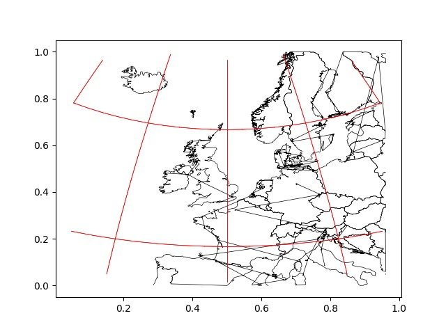
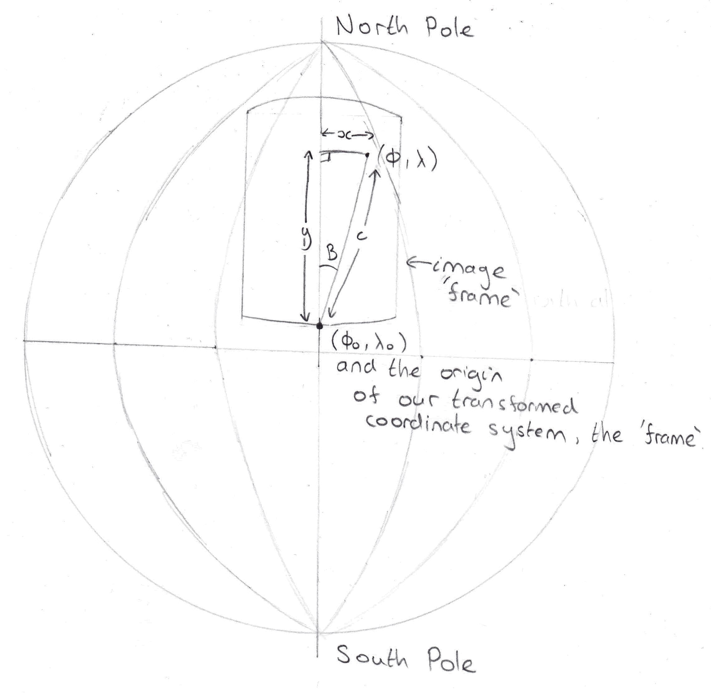

If you haven't already, I would strongly recommend reading this to cover the basic concepts about spherical geometry like great circles and this to see how to calculate the azimuth function.
Whilst decoding some images I had received from NOAA weather satellites, I had the choice of whether I wanted to add a map boundary overlay onto my image on the software I had been using. It could find when I started recording the satellite and the duration of the recording and sucessfully added the overlay.
I wanted to know how it did this, as it does not seem to be a common map projection to make. Fortunately, the software creator's website gave me a starting place.
I will assume that the Earth is a perfect sphere throughout. Although I may quote angles in degrees, the formulas shown will use radians as their unit for angles.
Before we think about the solutions for this problem, we need to clarify what it is we are trying to achieve. We have a satellite on an orbit around the Earth. To start with, it will be orbiting from pole to pole so that its orbit is perpendicular to the equator. Over a period of time, it starts at one location and moves (let's say towards the North pole) and scans the ground beneath it to form a picture so that if we plotted the image boundaries on the Earth, we have a rectangle pasted on the Earth's surface. Therefore, we want to have a function that takes a point on the Earth's surface (given it's global coordinates) and transforms it to a pixel position on our picture rectangle.
First, we must find the vertex angle B and the hypotenuse distance c. Knowing the coordinates of the satellite's starting location and the global point, we can use the azimuth and great circle distance formulas. To then find x and y, we need to use Napier's Rules from right spherical trigonometry. These topics are covered at the link near the top of this page.
We need to change x and y to become image coordinates, with the origin at the bottom left of the image. The units of the transform along the x and y axes are a little ambiguous, so we need to normalise them. The width and height of the image form great circles on the surface of the Earth, so these distances are represented by great circle arc angles. Divide x and y by the anglular image width and height respectively. We have to also add 0.5 to x so it's range goes between -0.5 and 0.5 to between 0 and 1, just like y.
The difficult step of the transformation is over. The coordinates x and y now must be converted from normalised (between 0 and 1) coordinates to pixel coordinates. How do we know how wide the image should be?
The resolution of the images from NOAA satellites are roughly 4km/pixel. If we have specified our image width and height in (angular) great circle distances, we can work out the distances (as lengths) the image covers. We then divide the width and height as lengths by 4km/pixel to get the width and height as pixels. Multiply each transformed point's x and y by the pixel width and height respectively and the transform is complete!
Map boundaries are stored as a list of points in global coordinates. You could create a program to transform these points like I did in the picture at the top. However, if you overlay your transformed boundaries on to a real satellite photo, it wouldn't fit regardless of how much stretching and rotating you apply. This is because these need to be applied during the transformation, not after. The NOAA weather satellites orbit with an inclination of about 19 degrees away from a line of longitude. To account for this, offset B by this before you use it in the spherical trigonometry.
Also, the Earth will rotate underneath the satellite as it's taking an image, which will mean the image is distorted. This can be accounted for and see this for advice on how to account for this too.